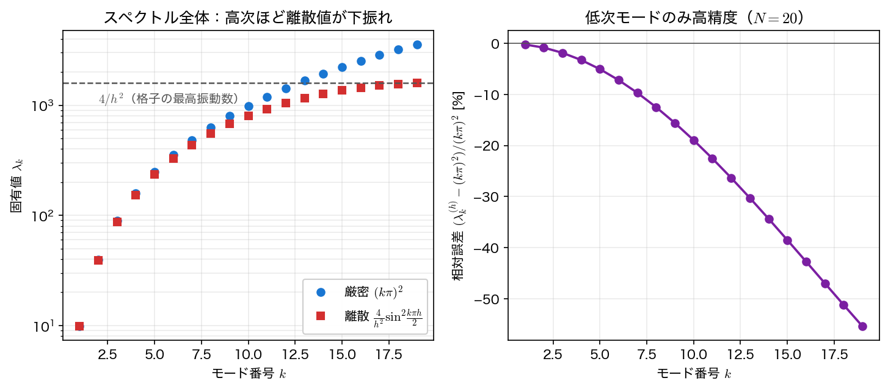
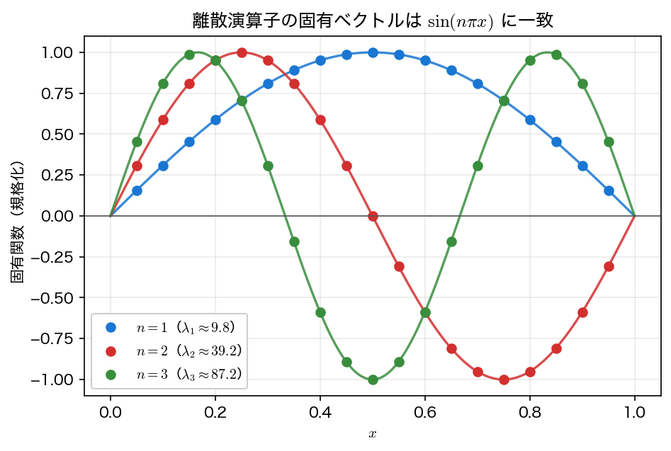

固有値問題
境界値問題 \(-y''=f\) は同じ三重対角行列 \(A\) で線形系 \(A\mathbf y=\mathbf f\) になった。右辺を \(\mathbf f\) ではなく未知のスカラー倍 \(\lambda\mathbf y\) に置き換えると、固有値問題
になる。連続の問題でいえば
——自明解 \(y\equiv0\) 以外の解をもつ特別な \(\lambda\)（固有値）とその解 \(y\)（固有関数）を求める問題である。これはスツルム・リウヴィル問題（Sturm–Liouville problem）の最も簡単な形で、厳密な固有値は \(\lambda_n=(n\pi)^2\)、固有関数は \(\sin(n\pi x)\) である。本ページでは、同じ離散化で得た行列 \(A\) の固有値を、べき乗法と逆べき乗法で求める。
物理的な意味
固有値問題は応用上の主役である。
- 弦の振動：両端を固定した弦の固有振動モードが \(\sin(n\pi x)\)、固有振動数が \(\sqrt{\lambda_n}\propto n\pi\)。最小固有値 \(\lambda_1\) が基本振動（いちばん低い音）に対応する。
- 量子井戸：1次元の無限井戸に閉じ込められた粒子のエネルギー準位は \(-y''=\lambda y\) の固有値そのもの（\(\lambda\) がエネルギー）。基底状態が最小固有値である。
どちらも物理的に重要なのは最小固有値（基本モード・基底状態）であることが多い。後で見るように、最小固有値には逆べき乗法がよく効く。
離散固有値と連続固有値
離散化した行列 \(A=(1/h^2)\,\mathrm{tridiag}(-1,2,-1)\) の固有値は、閉じた形で書ける：
\(k\) が小さいとき \(\sin\theta\approx\theta\) より \(\lambda_k^{(h)}\approx(k\pi)^2\) となり、\(O(h^2)\) の誤差で連続の固有値に一致する。一方、\(k\) が大きい（高振動）モードでは正弦の頭打ちで離散固有値が連続値より下振れし、最大固有値は \(4/h^2\) に近づく（格子で表せる最高振動数の限界）。つまり、十分に解像された低次モードだけが高精度で、1波長あたりの格子点数が足りない高次モードでは固有値の誤差（数値分散）が大きい。ただし高次モードが「非物理的な人工物」だという意味ではない。連続問題にも \(\sin(k\pi x)\) という固有関数が任意の \(k\) で存在し、この差分行列の固有ベクトルはどの \(k\) でも \(v^{(k)}_j=\sin(k\pi j/N)\) とその格子点値に厳密に一致する。誤っているのは固有値のほうであり、これは単なる解像度不足である。

べき乗法：最大固有値
べき乗法（power method）は、初期ベクトルに行列を繰り返し掛けると、絶対値最大の固有値に対応する固有ベクトルの方向へ揃っていく性質を使う：
これが働くには、絶対値最大の固有値が一意であり、初期ベクトルがその固有ベクトル成分を含むことが必要である。たとえば最低モードの固有ベクトルから出発すれば、いつまでも最大モードへは移らない。
固有値そのものはレイリー商（Rayleigh quotient） \(\lambda = (\mathbf v^\top A\mathbf v)/(\mathbf v^\top\mathbf v)\) で取り出す。本問題で最大固有値は最高振動モード \(\approx 4/h^2\) に対応する。収束の速さは、初期ベクトルが実際に含んでいるモードのうち上位2つの固有値の比
で決まる。固有ベクトルの方向の誤差は \(r^k\) で減り、\(A\) が対称ならレイリー商の誤差はさらにその2乗の \(r^{2k}\) で減る。\(r\) が1に近い（上位固有値が密集する）ほど遅い。本問題の上端は密集しているので収束は遅く、後の実行結果でそれが現れる。なお本ページでは固有値を昇順に \(\lambda_1<\dots<\lambda_{N-1}\) と番号付けているので、一般の初期ベクトルなら \(r=\lambda_{N-2}/\lambda_{N-1}\) である。
逆べき乗法：最小固有値
物理で欲しいのはたいてい最小固有値（基本振動・基底状態）である。これには逆べき乗法（inverse power method）を使う。\(A\) の最小固有値は \(A^{-1}\) の最大固有値の逆数なので、\(A^{-1}\) にべき乗法を当てればよい。ただし逆行列は作らず、各反復で線形系
を解いて \(\mathbf w=A^{-1}\mathbf v^{(k)}\) を得る。この線形系こそ三重対角なので、前ページのトーマス法（第3回のガウス消去を三重対角に特化したもの）がそのまま使える。\(A\) は反復のあいだ変わらないので、毎回 \(O(n)\) で解ける。最小固有値は他の固有値から十分離れているため、べき乗法と違って収束が速い——これが逆べき乗法の強みである。
サンプルコード
例題3 \(-y''=\lambda y\) を \(N=20\) で離散化し、べき乗法で最大固有値、逆べき乗法で最小固有値（基本モード）を求める。さらに最小固有値を \(\pi^2\) と、固有ベクトルを \(\sin(\pi x)\) と比較する。逆べき乗法の線形系 \(A\mathbf w=\mathbf v\) は、有限差分法のサンプルの thomas に係数の配列 \(a_i=c_i=-1/h^2,\ b_i=2/h^2\) を渡して解く。
#include <stdio.h>
#include <stdlib.h>
#include <math.h>
static const double PI = 3.14159265358979323846;
/* 三重対角行列 A = (1/h^2) tridiag(-1, 2, -1)（演算子 -d^2/dx^2 の離散化）
サイズ m = N-1。固有値の厳密値は lambda_k = (4/h^2) sin^2(k pi h /2)。 */
/* y = A v （三重対角の行列ベクトル積） */
void matvec_tri(int m, double inv_h2, const double v[], double y[]) {
for (int i=0;i<m;i++){
double s = 2.0*v[i];
if (i>0) s -= v[i-1];
if (i<m-1) s -= v[i+1];
y[i] = inv_h2*s;
}
}
/* トーマス法（三重対角ガウス消去, O(n)）
a[i] x[i-1] + b[i] x[i] + c[i] x[i+1] = d[i], i=0..n-1
a[0], c[n-1] は使わない。cp, dp は作業配列。 */
void thomas(int n, const double a[], const double b[], const double c[],
const double d[], double x[]) {
double *cp = malloc(n * sizeof(double));
double *dp = malloc(n * sizeof(double));
cp[0] = c[0]/b[0];
dp[0] = d[0]/b[0];
for (int i=1;i<n;i++){ /* 前進消去 */
double m = b[i] - a[i]*cp[i-1];
cp[i] = c[i]/m;
dp[i] = (d[i] - a[i]*dp[i-1])/m;
}
x[n-1] = dp[n-1]; /* 後退代入 */
for (int i=n-2;i>=0;i--) x[i] = dp[i] - cp[i]*x[i+1];
free(cp);
free(dp);
}
/* ユークリッドノルム ||v||_2 */
double norm2(int n, const double v[]) {
double s = 0.0;
for (int i=0;i<n;i++) s += v[i]*v[i];
return sqrt(s);
}
/* レイリー商 (v^T A v)/(v^T v) */
double rayleigh(int m, double inv_h2, const double v[]) {
double *Av = malloc(m * sizeof(double));
matvec_tri(m, inv_h2, v, Av);
double num=0, den=0;
for (int i=0;i<m;i++){ num+=v[i]*Av[i]; den+=v[i]*v[i]; }
free(Av);
return num/den;
}
int main(void){
int N = 20, m = N-1;
double h = 1.0/N, inv_h2 = 1.0/(h*h);
double *v = malloc(m * sizeof(double));
double *w = malloc(m * sizeof(double));
/* 初期ベクトル */
for (int i=0;i<m;i++) v[i] = 1.0;
/* ---- べき乗法：最大固有値（最高振動モード, ~ 4/h^2）---- */
printf("=== べき乗法（最大固有値, 例題3: -y''=lambda y, N=%d）===\n", N);
printf(" 反復 k レイリー商 lambda_max\n");
double lam_prev=0;
for (int k=1;k<=100;k++){
matvec_tri(m,inv_h2,v,w);
double nrm=norm2(m,w);
for (int i=0;i<m;i++) v[i]=w[i]/nrm;
double lam=rayleigh(m,inv_h2,v);
if (k<=5 || k%20==0){ printf(" %3d %18.10f\n",k,lam); }
if (fabs(lam-lam_prev)<1e-12){ printf(" %3d %18.10f (収束)\n",k,lam); lam_prev=lam; break; }
lam_prev=lam;
}
double lam_19 = inv_h2*4.0*pow(sin((m )*PI*h/2.0),2.0); /* k=N-1=19 最大 */
double lam_18 = inv_h2*4.0*pow(sin((m-1)*PI*h/2.0),2.0); /* k=N-2=18 */
double lam_17 = inv_h2*4.0*pow(sin((m-2)*PI*h/2.0),2.0); /* k=N-3=17 */
double r_gen = lam_18/lam_19, r_eff = lam_17/lam_19;
printf("離散の最大固有値（厳密式）= %.10f, 4/h^2 = %.6f\n",
lam_19, 4.0*inv_h2);
printf("一般の初期ベクトル: 誤差比 lambda_18/lambda_19 = %.6f\n", r_gen);
printf("全成分1の初期ベクトルは偶数モードと直交→実際に効くのは k=17\n");
printf(" 固有ベクトルの誤差比 lambda_17/lambda_19 = %.6f\n", r_eff);
printf(" レイリー商の誤差比 その2乗 = %.6f（1に近い→遅い）\n\n",
r_eff*r_eff);
/* ---- 逆べき乗法：最小固有値（基本モード, ~ pi^2）---- */
double *a = malloc(m * sizeof(double)); /* A の係数（thomas に渡す） */
double *b = malloc(m * sizeof(double));
double *c = malloc(m * sizeof(double));
for (int i=0;i<m;i++){ a[i] = -inv_h2; b[i] = 2.0*inv_h2; c[i] = -inv_h2; }
for (int i=0;i<m;i++) v[i]=1.0;
printf("=== 逆べき乗法（最小固有値=基本モード, ~ pi^2, N=%d）===\n", N);
printf(" 反復 k レイリー商 lambda_1\n");
lam_prev=0;
for (int k=1;k<=60;k++){
thomas(m,a,b,c,v,w); /* A w = v を解く（=A^{-1} v）*/
double nrm=norm2(m,w);
for (int i=0;i<m;i++) v[i]=w[i]/nrm;
double lam=rayleigh(m,inv_h2,v);
if (k<=5 || k%10==0){ printf(" %3d %18.10f\n",k,lam); }
if (fabs(lam-lam_prev)<1e-12){ printf(" %3d %18.10f (収束)\n",k,lam); lam_prev=lam; break; }
lam_prev=lam;
}
double lam1_exact = inv_h2*4.0*pow(sin(PI*h/2.0),2.0); /* k=1 */
printf("離散の最小固有値（厳密式）= %.10f\n", lam1_exact);
printf("連続の基本固有値 pi^2 = %.10f\n", PI*PI);
printf("離散化誤差 = %.4e\n\n", fabs(lam1_exact-PI*PI));
/* ---- 基本モードの固有ベクトルが sin(pi x) に一致するか ---- */
double scale = 0; int imax=0; double vmax=0;
for (int i=0;i<m;i++){ if(fabs(v[i])>vmax){vmax=fabs(v[i]); imax=i;} }
scale = sin(PI*(imax+1)*h)/v[imax]; /* 中央付近で振幅合わせ */
printf("=== 基本モード固有ベクトル vs sin(pi x)（振幅規格化後）===\n");
printf(" x v_i(規格化) sin(pi x)\n");
for (int i=0;i<m;i+=3){
double xi=(i+1)*h;
printf(" %5.3f %14.8f %14.8f\n", xi, scale*v[i], sin(PI*xi));
}
/* 作図用（1）: 離散固有値の全スペクトルと連続固有値 */
FILE *fp = fopen("eigen_spectrum.dat", "w");
if (fp == NULL) { perror("eigen_spectrum.dat"); return 1; }
fprintf(fp, "# k lambda_discrete lambda_continuous\n");
for (int k=1;k<=m;k++){
double ld = inv_h2*4.0*pow(sin(k*PI*h/2.0),2.0);
fprintf(fp, "%d %.10e %.10e\n", k, ld, (k*PI)*(k*PI));
}
fclose(fp);
/* 作図用（2）: 基本モードの固有ベクトル（境界を含む全点）*/
fp = fopen("eigenvector.dat", "w");
if (fp == NULL) { perror("eigenvector.dat"); return 1; }
fprintf(fp, "# x v_normalized sin(pi x)\n");
fprintf(fp, "%.10e %.10e %.10e\n", 0.0, 0.0, 0.0);
for (int i=0;i<m;i++){
double xi=(i+1)*h;
fprintf(fp, "%.10e %.10e %.10e\n", xi, scale*v[i], sin(PI*xi));
}
fprintf(fp, "%.10e %.10e %.10e\n", 1.0, 0.0, 0.0);
fclose(fp);
free(v); free(w); free(a); free(b); free(c);
return 0;
}
コンパイル・実行:
実行結果
=== べき乗法（最大固有値, 例題3: -y''=lambda y, N=20）===
反復 k レイリー商 lambda_max
1 800.0000000000
2 1120.0000000000
3 1257.1428571429
4 1333.3333333333
5 1381.8181818182
20 1541.9993249189
40 1578.7560122268
60 1588.3785492827
80 1589.9046648127
100 1590.1171039067
離散の最大固有値（厳密式）= 1590.1506724761, 4/h^2 = 1600.000000
一般の初期ベクトル: 誤差比 lambda_18/lambda_19 = 0.981571
全成分1の初期ベクトルは偶数モードと直交→実際に効くのは k=17
固有ベクトルの誤差比 lambda_17/lambda_19 = 0.951360
レイリー商の誤差比 その2乗 = 0.905085（1に近い→遅い）
=== 逆べき乗法（最小固有値=基本モード, ~ pi^2, N=20）===
反復 k レイリー商 lambda_1
1 9.9750623441
2 9.8507081405
3 9.8493448356
4 9.8493277443
5 9.8493275267
8 9.8493275239 (収束)
離散の最小固有値（厳密式）= 9.8493275239
連続の基本固有値 pi^2 = 9.8696044011
離散化誤差 = 2.0277e-02
=== 基本モード固有ベクトル vs sin(pi x)（振幅規格化後）===
x v_i(規格化) sin(pi x)
0.050 0.15643447 0.15643447
0.200 0.58778527 0.58778525
0.350 0.89100653 0.89100652
0.500 1.00000000 1.00000000
0.650 0.89100653 0.89100652
0.800 0.58778527 0.58778525
0.950 0.15643447 0.15643447
- べき乗法（最大固有値）：レイリー商は \(1590\) 付近へ向かうが、100反復でも厳密値 \(1590.15\) にまだ届かない。上位固有値が密集しているためである。ただし比が \(\lambda_{18}/\lambda_{19}=0.9816\) になるのは一般の初期ベクトルの場合で、ここで使った全成分1のベクトルは偶数モードと厳密に直交する（\(k\) が偶数なら \(\sum_{j=1}^{N-1}\sin(k\pi j/N)=0\)）ため、\(k=18\) の成分をそもそも含まない。実際に効くのは \(k=17\) で、固有ベクトルの誤差比は \(\lambda_{17}/\lambda_{19}=0.9514\)、対称行列なのでレイリー商の誤差比はその2乗の \(0.9051\) になる。表の \(k=80,100\) の残差 \(0.2460\to0.03357\) から測った1反復あたりの比は \((0.03357/0.2460)^{1/20}=0.9052\) で、確かにこちらと一致する。最大固有値 \(\approx 4/h^2\) は格子で表せる最高振動モードに対応し、物理的な固有振動数としての関心は薄いが、陽解法の安定な刻み幅や系の剛性を測る量としては重要である。
- 逆べき乗法（最小固有値）：こちらはわずか8反復で収束し、基本固有値 \(\lambda_1^{(h)}=9.849\) を得る。連続の \(\pi^2=9.870\) との差は \(2.0\times10^{-2}\)（離散化誤差 \(O(h^2)\)）。最小固有値が他から十分離れている（\(\lambda_1/\lambda_2=0.2515\)）ことに加え、上と同じ理由で初期ベクトルが \(k=2\) を含まないため、実際に効く比は \(\lambda_1/\lambda_3=0.1130\)（レイリー商ではその2乗の \(0.0128\)）とさらに小さい。物理的に重要な基本モードに対して逆べき乗法が効くという典型例である。
- 固有ベクトル：規格化した固有ベクトルは \(\sin(\pi x)\) と小数点以下7桁まで一致する。離散化された行列が、連続の固有関数を忠実に再現していることが分かる。

可視化
eigen.c は eigen_spectrum.dat（1列目 モード番号 \(k\)、2列目 離散固有値 \(\lambda_k^{(h)}\)、3列目 連続固有値 \((k\pi)^2\)）と eigenvector.dat（1列目 \(x\)、2列目 逆べき乗法で得た基本モード、3列目 \(\sin(\pi x)\)）を書き出す。前者は離散と連続のずれ、後者は基本モードの固有関数に対応する。
import numpy as np
import matplotlib.pyplot as plt
k, lam_h, lam_exact = np.loadtxt("eigen_spectrum.dat", unpack=True)
x, v, s = np.loadtxt("eigenvector.dat", unpack=True)
fig, (ax1, ax2) = plt.subplots(1, 2, figsize=(11, 4.2))
ax1.plot(k, lam_exact, "-", lw=1.5, label="continuous $(k\\pi)^2$")
ax1.plot(k, lam_h, "o", ms=5, label="discrete $\\lambda_k^{(h)}$")
ax1.set_yscale("log")
ax1.set_xlabel("mode number $k$")
ax1.set_ylabel("$\\lambda_k$")
ax1.set_title("only the low modes are resolved ($N = 20$)")
ax1.grid(alpha=0.3)
ax1.legend()
ax2.plot(x, s, "-", lw=1.5, label="$\\sin(\\pi x)$")
ax2.plot(x, v, "o", ms=6, label="inverse power method")
ax2.set_xlabel("$x$")
ax2.set_ylabel("$y$")
ax2.set_title("fundamental mode ($N = 20$)")
ax2.grid(alpha=0.3)
ax2.legend()
fig.tight_layout()
fig.savefig("eigen.png", dpi=150)
plt.show()
実行:
左は縦軸を対数にしてある。\(k\) が小さいうちは2本の曲線が重なるが、\(k\) が大きくなると離散固有値は \(4/h^2\) で頭打ちになり、連続の \((k\pi)^2\) から下に離れていく——格子で表せる振動には上限があるという事実がそのまま現れている。右は基本モードで、\(N=20\) の粗い格子でもマーカーが \(\sin(\pi x)\) の実線にぴたりと乗る。
まとめ
- 演算子 \(-d^2/dx^2\) の固有値問題 \(-y''=\lambda y\) は、境界値問題と同じ三重対角行列 \(A\) の固有値問題 \(A\mathbf v=\lambda\mathbf v\) に離散化される。
- 離散固有値は \(\lambda_k^{(h)}=(4/h^2)\sin^2(k\pi h/2)\)。低次モードは \(O(h^2)\) で連続の \((k\pi)^2\) に一致するが、解像度の足りない高次モードでは固有値が大きく下振れする（固有ベクトル自体はどの \(k\) でも \(\sin(k\pi x)\) の格子点値に厳密に一致する）。
- べき乗法は最大固有値（最高振動モード \(\approx 4/h^2\)）に収束するが、上位固有値が密集するため遅い。速さを決めるのは「初期ベクトルが実際に含んでいるモードのうち上位2つ」の比である。
- 逆べき乗法は各反復で \(A\mathbf w=\mathbf v\) を解く（前ページのトーマス法
thomasを使う）。物理的に重要な最小固有値＝基本モード \(\lambda_1\approx\pi^2\) に速く収束する。 - 求めた固有ベクトルは連続の固有関数 \(\sin(n\pi x)\) を忠実に再現する。